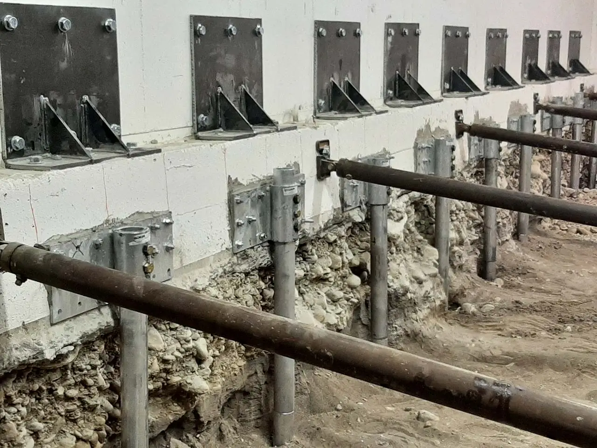
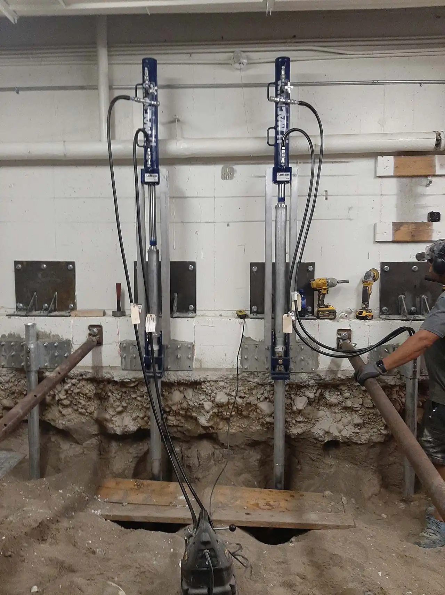
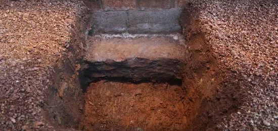
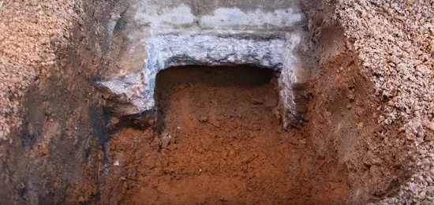
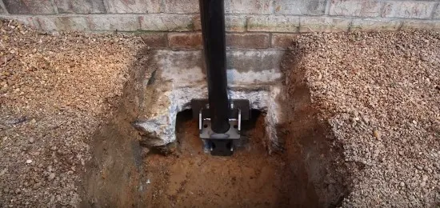
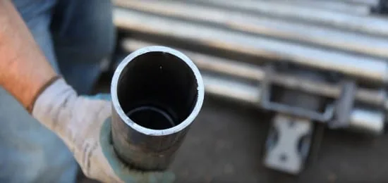

Poly-Lift provides push piers in Logan, across Cache Valley and in Davis County, from our Logan office. Call the Cache location at (435) 999-9309 or the Weber location at (801) 530-5617.
A shifting, sinking, and leaking foundation is almost always connected to soil problems. Push piering is a great way to resolve this issue.
Steel piers use the resistance of a stable surface, such as bedrock, to lift and stabilize your home. The steel is driven to bedrock and not supported by friction against the existing soil to provide consistent and reliable results. The piers are installed and load-tested individually, using the weight of your home as a reciprocal force.
Maintaining the property value is important to you.
You are looking for a worthwhile tactic to lift your building’s structure back to the original position.
You need a quick and practical installation.
You want minimal disturbance.
Advantages of Using Foundation Push Piers
There are many advantages to pier pushing for a building structure.
Low cost (up to 10x cheaper than replacing the foundation).
Requires less materials and labor.
No heavy equipment needed.
No destruction to the yard.
Wide variety in designs.
Engineers can easily change the design if needed.
Minimal disruption to the ground and soil environment.
Push piers lift the building above the ground, keeping it safe from flooding.
Easily installed in restrictive and narrow gaps.
We will go over what options you have and help determine which one is best for you. We are happy to provide a free estimate
If you would like more in-depth information, please check out our technical page.
To Install a Push Pier, we:
- Expose the Foundation
- Prepare the Footing to Receive a Steel Bracket
- Set the Bracket With Anchors to Cradle the Foundation.
- Attach a Drive Stand
- Drive Pier Sections Until It Reaches a Stable Surface, Such as Bedrock.
- Structure Is Set up to Lift and Then Stabilize.
- Once the Piers Are Installed, Restoration Is Complete.
From our jobs






Common questions
01Foundational Piers: What is Push Piering?
Structural steel piers, also known as push piering, are attached to your foundation and driven into the ground, providing strength and stabilization.
02Are Foundation Push Piers Right for You?
Push piers can be a fantastic solution to issues with your foundation. Here are few reasons why this approach may be ideal:
03Want to know if pier pushing is the right solution for you?
Let’s chat.
04Can a Bad Foundation Be Fixed With Foundation Piers?
Absolutely! While no foundation repair project is trivial, piers are a fantastic option to get the job done for a reasonable price.
05How Much Do Foundation Piers Cost?
The cost varies depending on the structure and foundation size. An average size home can cost between $10,000 and $20,000. To get more accurate pricing, please reach out and request an inspection.
06Can You Build a House on Piers?
Opting for a pier foundation is a fantastic way to save on the overall costs of your home. As long as you don’t want/need a basement or crawlspace that comes with a continuous foundation, going this route can adequately support your house – while dramatically reducing material expenses.
07Do I Need to Move Out of My House for a Foundation Repair Project?
Nope. You do not need to move out at any time during the inspection, installation, or lifting phase of the push pier foundation project. The operation is completely safe for you and your family.
08Are Piers Considered a Permanent Foundation?
Push piers are very effective to can lift and stabilize most structures. They are driven to a depth where they reach solid bedrock and become a permanent foundation.
09How Deep Should Foundation Piers Be?
Foundation piers are driven hydraulically to a specified depth until they reach bedrock and can support the structure being lifted. Generally speaking, a depth of about 40 feet is sufficient if the ground has adequate bearing capacity.
10What Is the Difference Between Piers and Piles?
Piles are primarily used when the soil lacks firm strata – like bedrock. Piers are meant for smaller applications (houses), whereas piles are meant to support bigger weight loads, including highways and bridges.